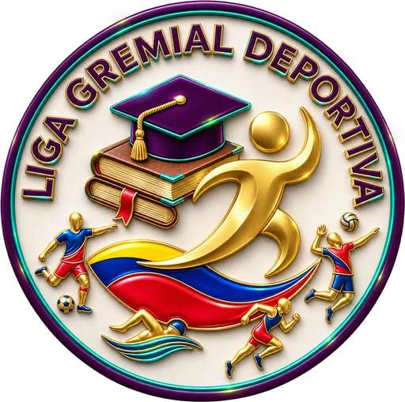
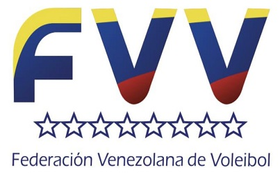
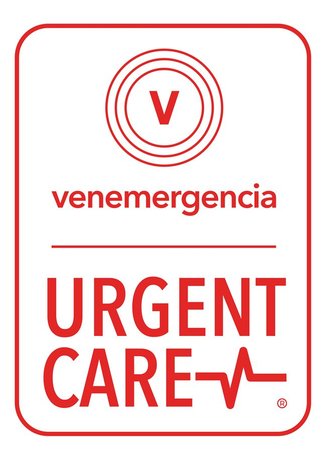

Unir gremios a través del deporte.
LGD agrupa comunidades profesionales universitarias mediante competencias, actividades formativas y programas de bienestar.
La Liga Gremial Deportiva es una organización deportiva sin fines de lucro, de alcance nacional, gremial y multidisciplinario. Integra profesionales, colegios, gremios, instituciones y clubes en un modelo que une deporte, formación, salud, liderazgo y comunidad.

El escudo de la Liga une el birrete y los libros de la formación universitaria con la figura del atleta y la bandera de Venezuela.

LGD agrupa comunidades profesionales universitarias mediante competencias, actividades formativas y programas de bienestar.
El modelo impulsa referentes capaces de crecer académicamente, ejercer su profesión y competir con disciplina.
La Liga complementa el ecosistema deportivo formal, sin sustituir federaciones, clubes ni normas oficiales.
Fomentar la participación deportiva, académica y profesional de los gremios, promoviendo salud, liderazgo, valores ciudadanos y desarrollo integral.
Consolidar una plataforma gremial sostenible, competitiva e inclusiva, reconocida por su aporte a la comunidad profesional y al relevo generacional.
Impulsar espacios donde nuevos atletas y profesionales encuentren referentes reales.
Competir con identidad, respeto y cooperación entre disciplinas e instituciones.
Promover organización, puntualidad, responsabilidad y conducta deportiva.
Reconocer la formación, el esfuerzo y la mejora continua como parte del rendimiento.
Competencia centrada en el resultado.
Competencia, bienestar, estudio, profesión y comunidad.
Atletas y gremios mejor conectados, visibles y organizados.
Dependen de Presidencia
Coordinaciones de trabajo
La Liga Gremial Deportiva tiene sus raíces en la visión de integración y bienestar del Colegio de Contadores Públicos del Estado Miranda (CCPMIRANDA), nuestra Entidad Co-fundadora y Aliado Estratégico Principal.
Un proyecto impulsado junto al Colegio de Contadores Públicos del Estado Miranda





